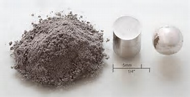

Creative Multimedia Programming Role In Chemical Industry
 10/03/2017
10/03/2017
The history of 3D printing started 30 years ago with Chuck Hull, the Thomas Edison of the 3D printing industry, who introduced the first 3D printer. Since then, 3D printing (also known as additive manufacturing) has been used to create everything from food and other consumer goods to automotive and airplane parts.
Key drivers of adoption
The tremendous growth of 3D printing has been driven by three key factors. First, the cost is rapidly decreasing due to lower raw material costs, stronger competitive pressures, and technological advancements. Second, printing speeds are increasing. For example, last year, startup company Carbon3D printed a palm-sized geodesic sphere in a little more than 6 minutes, which is 25 to 100 times faster than traditional 3D printing solutions. Third, new 3D printers are able to accommodate a wider variety of materials. Driven by innovations within the chemical industry, a broad range of polymers, resins, plasticizers, and other materials are being used to create new 3D products
While it’s difficult to predict the long-term impact 3D printing will have on the overall economy, it is safe to say that the it could affect almost every industry and the way companies do business. In fact, the chemical industry has already implemented 3D applications in the areas of research and development (R&D) and manufacturing.
Innovative feedstocks and processes
3D printing provides a vast opportunity for the chemical industry to develop innovative feedstock and drive new revenue streams. While more than 3,000 materials are used in conventional component manufacturing, only about 30 are available for 3D printing. To put this into perspective, the market for chemical powder materials is predicted to be more than $630 million annually by 2020.

Plastics and resins, as well as metal powders and ceramic materials, are already in use or under evaluation for printing prototypes, parts of industry assets, or semi-finished goods—particularly those that are complex to produce and that require small batch sizes. Developing the right formulas to create these new materials offers an opportunity for constant innovation within the chemical field, which will likely produce even more materials in the future. For example, Covestro, a developer of polymer technology, is developing a range of filaments, powders, and liquid resins for all common 3D printing methods; 3M, working with its subsidiary Dyneon, recently filed a patent for using fluorinated polymers in 3D printing; and Wacker is testing 3D printing with silicones.
The chemical industry is also in the driver’s seat when it comes to process development. About 20 different processes now exist that share one common characteristic: layered deposition of printer feed. The final product could be generated from melting thermoplastic resins (for example, laser sinter technology or fused deposition modeling) or via (photo) chemical reaction such as stereo-lithography or multi-jet modeling. For both process types, the physical and chemical properties of feed materials are critical success factors for processing and for the quality of the finished product.
New tools and techniques in R&D and operations
Typically, the laboratory equipment used to do chemical synthesis is expensive and complex to use, and it often represents an obstacle in the research progress. With 3D printing, it is now possible to create reliable, robust miniaturized fluidic reactors as “micro-platforms” for organic chemical syntheses and materials processes, printed in few hours with inexpensive materials. Such micro-reactors allow building up target molecules via multi-step synthesis as well as breaking down molecular structures and detecting the building blocks through reagents which could be embedded during the 3D printing process.
Micro-reactors can also be used as small prototypes to simulate manufacturing processes.
In addition to printing equipment used in laboratories, some chemical manufacturers are using 3D printers for maintenance on process plant assets. For example, when an asset fails because of a damaged engine valve, the replacement part can be printed on site and installed in real time. Creating spare parts in-house can significantly reduce inventory costs and wait time for deliveries, hence contributing to increase overall asset uptime.
For companies that do not want to print the parts themselves, an on-demand manufacturing network is available that will print and deliver parts as needed. UPS has introduced a fully distributed manufacturing platform that connects many of its stores with 3D printers. When needed, UPS and its partners print and deliver requested parts to customers.
Commercial benefits
Across all industries, 3D printing promises to reduce costs across the supply chain. For example, the ability to print spare parts on demand can save money through improved asset uptime and more efficient workforce management. 3D printing also helps control costs with reduced waste and a smaller carbon footprint. In contrast to traditional “subtractive” manufacturing techniques in which raw material is removed, 3D printing is an additive process that uses only the amount of material that is needed. This can save significant amounts of raw materials. In the aerospace industry, for example, Airbus estimates 3D printing could reduce its raw material costs by up to 90 percent.
From a manufacturing perspective, 3D printing can streamline processes, accelerate design cycles, and add agility to operations. Printing prototypes on site speeds the R&D development cycle and shortens time to market. Researchers can make, test, and finalize prototypes in days instead of weeks. Also, the ability to print parts or equipment on demand will eliminate expensive inventory holding costs and restocking order requirements and free up floor space for other purposes. In the U.S. alone, manufacturers and trade inventories for all industries were estimated at $1.8 trillion in August 2016, according to the U.S. Census Bureau. Reducing inventory by just 2 percent would be a $36 billion savings.
Barriers to adoption.
As with most new technology, barriers must be overcome for this potential to fully be realized. One much-discussed but unresolved issue is intellectual property protection. Similar to the way digital music is shared, 3D printable digital blueprints could be shared illegally and/or unknowingly either within a company or by outside hackers.
In addition to digital files, users can print molds from scanned objects and use them to mass-produce exact replicas that are protected under copyright, trademark, and patent laws. This problem will continue to grow as companies move to an on-demand manufacturing network, requiring digital blueprints to be shared with independent fabricators. This poses a huge threat on companies losing billions of dollars every year in intellectual property globally.
Regulatory issues are slowing the adoption of 3D printer applications. This is especially applicable in the medical and pharmaceutical industries but has potential impact in many markets. For example, globally regulating what individuals will create with access to the Internet and a 3D chemical printer will be difficult. Also, as 3D printing drives small and customer-specific lot sizes, it will likely spur an explosion of proprietary bills of material and recipes, which will be hard to track and control under REACH or REACH-like regulations. Because this is a new frontier, many regulatory issues must be addressed.
In addition to legal and regulatory challenges, the industry has a long way to go in reliably reproducing high-quality products. Until 3D printing can match the speed and quality output requirements of conventional manufacturing processes, it will likely be reserved for prototypes or small-sized lots.
3D printing: a new frontier
While 3D printing has not reached the point of use for large-scale production or to consistently make custom products, ongoing innovations drive high demand. 3D printer market forecasts estimate that shipments of industrial 3D printers will grow by ~400% through 2021 to a value of about $26 billion. Global inventory value is estimated to be over $10 trillion. Reducing global inventory by just 5% would free up $500 billion in capital. Manufacturing overall is estimated to contribute ~16% to the global economy. If 3D printing just would capture 5% of this $12.8 trillion market, it would create a $640 billion+ opportunity.
3D printing will initially help chemical companies increase profitability by lowering costs and improving operational efficiency. However, the industry-changing opportunity is the chance to develop new feeds and formulations. The most successful chemical companies of the future will be the ones with the vision to begin developing and implementing 3D printing solutions today.
Dr. Stefan Guertzgen
Khizer Iqbal
 Creative Multimedia Progmramming
Creative Multimedia Progmramming